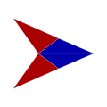
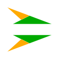
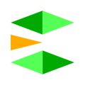

← Zum Spiel
USI - STAR FLEET
Spielanleitung für neue Spieler
Spielziel
Du führst eine von drei Fraktionen im Weltraum: Rot,
Grün oder Gelb. Die anderen beiden
Fraktionen werden vom Computer gesteuert.
- Sieg: Alle besetzten Sektoren aller Planeten gehören deiner Fraktion,
und es sind keine feindlichen Schiffe mehr im Spiel. Neutrale, nicht besetzte
Sektoren dürfen übrig bleiben – du musst nicht jeden Planeten besetzen.
- Niederlage: Deine Fraktion besitzt keinen Sektor und kein Schiff mehr.
Es gibt 10 Planeten, jeder mit 8 Sektoren und Platz für drei Kolonien.
Jede Fraktion kann höchstens 85 Schiffe gleichzeitig besitzen.
Alle Planeten beginnen neutral. Zu Beginn hat jede Fraktion drei Kampfschiffe und
zwei Transporter, aber keinen Sektor. Ohne Sektor läuft keine
Produktion. Die Transporter müssen deshalb zuerst einen Planeten anfliegen und dort
Truppen landen.
Steuerung
Spielstart
| Fraktionszeile anklicken | Fraktion wählen und Spiel starten |
| 1 / 2 / 3 | Fraktion vorwählen |
| Pfeil hoch / runter, Enter / Leertaste | Auswahl bestätigen |
| DE / EN | Sprache der Anleitung wechseln (gilt auch im Spiel) |
Maus
| Linksklick + Ziehen | Schiffe markieren (Box-Auswahl) |
| Linksklick (ohne Ziehen) | Einzelnes Schiff markieren oder Auswahl aufheben |
| Linksklick auf eigenen Planeten | Baumenü öffnen |
| Rechtsklick mit markierten Schiffen | Bewegungsbefehl: auf einen Planeten = dorthin fliegen, ins Freie = dorthin fliegen. Kampfschiffe landen nicht. |
| Rechtsklick auf Planeten mit Transporter | Transporter fliegt dorthin und landet (Truppen an Bord bleiben erhalten) |
| Rechtsklick ohne markierte Schiffe | Auswahl aufheben |
| Klick auf Mini-Map | Kamera zum gewählten Bereich bewegen |
Tastatur
| 1 – 8 | Gruppe auswählen |
| Shift + 1 – 8 | Markierte Schiffe der Gruppe zuweisen |
| P | Pause an/aus |
| ESC | Baumenü schließen |
Die Seitengruppen 1–8 sind reine Bedienelemente, keine Fraktionsnummern.
Shift+1 bis Shift+8 funktionieren auch auf deutschen Tastaturen.
Im Baumenü: 1–7 wählen eine Bauoption, 8 oder C setzt den Auftrag auf
„Nichts“ (stoppt die Fertigung), W oder 9 wechselt zwischen Angriff und
Verteidigung. ESC schließt das Menü. Speichern/Laden erfolgt über die Knöpfe im
rechten Seitenpanel.
Einheiten
Jede Fraktion hat eigene Schiffsmodelle, aber nur drei Rollen: Jäger, Fortgeschrittenes
Jäger und Bomber. Die Werte hängen von der Rolle ab, nicht vom Fraktionsdesign.
Transporter sind unbewaffnete Landungsschiffe.


Jäger
Typen 1 / 4 / 7 · F1 / F2 / F3
Schnell und leicht gepanzert. Hohe Feuerrate, ein Geschoß pro Salve.



Fortgeschrittenes Jäger
Typen 2 / 5 / 8 · F1 / F2 / F3
Mehr Panzerung und Schild als ein Jäger. Zwei Geschosse pro Salve, aber langsamer.
Bomber
Typen 3 / 6 / 9 · F1 / F2 / F3
Langsam und schwer gepanzert. Höchste Trefferchance, mehrere Geschosse pro Salve und Raketen.


Transporter
Typen 10 / 11 / 12 · F1 / F2 / F3
Unbewaffnet, schnell und stark gepanzert. Bringt 100 Soldaten als Verstärkung und gründet Kolonien.
Werte und Bewaffnung
| Schiff | Panzerung | Geschwindigkeit | Salven pro Sekunde | Trefferchance | Geschosse pro Salve |
|---|
| Jäger | 80 | 180 | 10 | 75 % | 1 |
| Fortgeschrittenes Jäger | 110 | 150 | 7,5 | 80 % | 2 |
| Bomber | 180 | 90 | 4,3 | 90 % | 2–3 plus Raketen |
| Transporter | 300 | 300 | – | – | – |
Werte gelten für alle drei Fraktionsdesigns einer Rolle. Schilde laden sich alle
10 Ticks (etwa alle 0,3 Sekunden) um einen Punkt nach, bis ihre Kapazität erreicht
ist. Die Kampfschiffe feuern automatisch auf feindliche Schiffe in Reichweite und
schießen nicht auf Planeten.
Waffen und Schaden
| Waffe | Schaden | Einsatz |
|---|
| Geschosse | 20 pro Geschoß | Alle Kampfschiffe; pro Salve ein bis drei Geschosse |
| Smart-Rakete | 130 | Bomber der Fraktionen 1 und 2 alle 30 Ticks (2 Sekunden); Planetenverteidigung |
| Rakete | 140 | Bomber der Fraktion 3 (Typ 9) alle 15 Ticks (1 Sekunde) |
Eine Salve trifft komplett oder verfehlt komplett; die Trefferchance wird pro Salve
gewürfelt. Ein schnelleres Ziel ist schwerer zu treffen: Pro 10 Punkte
Geschwindigkeitsdifferenz sinkt die Trefferchance um 3 Prozentpunkte, mindestens
20 Prozent bleiben.
Gegeneinander
Die Waffenstärke hängt von der Kombination aus Angreifer- und Zielrolle ab:
| Angreifer | Ziel | Schaden |
|---|
| Jäger | Bomber | +40 % |
| Jäger | Fortgeschrittenes Jäger | +40 % |
| Fortgeschrittenes Jäger | Bomber | +25 % |
| Fortgeschrittenes Jäger | Transporter | −10 % |
| Bomber | Transporter | +50 % |
| Transporter | – | Keine Waffen |
Alle anderen Kombinationen zählen normal (100 %). Jäger sind gegen Bomber und
Fortgeschrittene Jäger stark, Bomber gegen Transporter. Fortgeschrittene Jäger sind
gegen Transporter schwächer als gegen andere Ziele.
Im Code gibt es einen +35 %-Bonus für Transporter gegen Jäger. Transporter haben
aber keine Waffen und feuern nie, daher wird dieser Bonus im Spiel nicht wirksam.
Planetenbau
Bauoptionen
| Taste | Bauoption | Voraussetzung | Dauer | Effekt |
|---|
| 1 | Sektor ausbauen | weniger als 8 Sektoren | 400 Ticks | einen weiteren Sektor gewinnen (max. 8) |
| 2 | Soldaten ausbilden | Soldaten unter Sektoren × 200 | 400 Ticks | 50 Soldaten pro Durchgang |
| 3 | Jäger bauen | mindestens 2 Sektoren, freier Schiffplatz | 180 Ticks | ein Jäger |
| 4 | Transporter bauen | mindestens 3 Sektoren, 100 Soldaten, freier Schiffplatz | 260 Ticks | Transporter; kostet 100 Soldaten bei Fertigstellung |
| 5 | Fortgeschrittenes Jäger bauen | mindestens 4 Sektoren, freier Schiffplatz | 240 Ticks | Fortgeschrittenes Jäger |
| 6 | Fort bauen | mindestens 5 Sektoren, Forts unter Sektoren | 300 Ticks | ein Fort (Verteidigungsstärke im Bodenkampf) |
| 7 | Bomber bauen | mindestens 6 Sektoren, freier Schiffplatz | 350 Ticks | ein Bomber |
| 8 / C | Nichts | – | – | Auftrag stoppen/abbrechen |
Schiffe können nur gebaut werden, solange die Fraktion weniger als 85 Schiffe hat.
Ein Transporter kostet bei Fertigstellung 100 Soldaten; beim Start des Auftrags
müssen mindestens 100 Soldaten vorhanden sein.
Auftrag, Anzahl und Produktion
„Auftrag“ bestimmt die Bauoption, „Anzahl“ die Zahl der
Wiederholungen. +1/+10 bzw. −1/−10 erhöhen oder senken die Anzahl
(Standard 1). Bei 0 wird die Fertigung gestoppt. Jeder abgeschlossene Durchgang
startet den nächsten; bei Soldaten sind es 50 pro Durchgang. Der Fortschrittsbalken
zeigt die Restzeit. Soldaten, Forts, Verhalten und Planet zeigen deine Kolonie;
„alle Armeen“ zeigt die Truppen aller Fraktionen auf dem Planeten.
Bodentruppen und Kampf
- Kampfhandlungen finden statt, sobald mindestens eine Fraktion auf Angriff steht und
mehr als eine Fraktion auf dem Planeten vertreten ist. Stehen alle Fraktionen auf
Verteidigung, gibt es keinen Kampf.
- Alle 5 Ticks würfelt jede Fraktion ihre Kampfstärke aus; die Fraktion mit der
niedrigsten ausgewürfelten Stärke verliert 1 Soldaten. Es gewinnt nicht sofort
die Fraktion mit der höheren Stärke.
- Im Verteidigungsmodus besteht pro Kampf eine 3-%-Chance, dass die verteidigende
Fraktion zusätzlich einen Sektor und gegebenenfalls ein Fort verliert (nur bei
mehr als einem Sektor).
- Sinken die Soldaten einer Fraktion auf 0, verliert sie alle Sektoren auf diesem
Planeten.
| Auftrag | Kampfstärke |
|---|
| Angriff | Soldaten × (1 + Lebensbedingungen/100) |
| Verteidigung | Soldaten × (1 + Lebensbedingungen/100) × 1,25 + 25 × Forts |
| Ohne aktiven Auftrag | Kampfstärke × 1,25 |
Im Kampf zählen höchstens 200 Soldaten und höchstens 2 Forts; größere Mengen werden
bei der Kampfberechnung gekappt. Der 25-%-Bonus gilt nur, wenn kein Bauauftrag
läuft.
Planetenverteidigung
- Ab 7 Sektoren: automatische Abfangraketen gegen feindliche
Schiffe im Umkreis von 250. Feuer alle 60 Ticks (2 Sekunden), Vorrat 2.
Ab 8 Sektoren wächst der Vorrat auf 3. Nachgeladen wird alle 150 Ticks (5 Sekunden).
- Ab 8 Sektoren: Schutzschild mit Trefferpunkten 50 × Anzahl
Sektoren (maximal 400). Feindliche Schiffe im Radius 200 verlieren alle 10 Ticks
6 Panzerung; jeder Treffer kostet 1 Schild-Trefferpunkt, das Schild lädt sich
alle 120 Ticks (4 Sekunden) um 1 Punkt nach.
Raketen und Schild gehören der Kolonie, die den Planeten besitzt. Sie kämpfen
automatisch, ohne zusätzliche Befehle.
Transporter: Kolonie gründen
- Mit mindestens 100 Soldaten einen Transporter bauen. Bei Fertigstellung werden
100 Soldaten abgezogen.
- Transporter markieren und den Zielplaneten mit der rechten Maustaste anklicken.
- Der Transporter fliegt zum Planeten und landet, sobald er näher als 25 Einheiten
ist.
- Die Truppen an Bord werden der eigenen Kolonie auf dem Planeten gutgeschrieben:
+100 Soldaten.
- Hat die eigene Kolonie dort noch 0 Sektoren, entsteht ein Sektor: Bei weniger als
8 besetzten Sektoren wird ein neutraler Sektor beansprucht. Ist der Planet voll,
wird ein Sektor von der Fraktion mit den meisten Sektoren übernommen.
- Der Transporter ist danach verbraucht. Die Truppen müssen den Planeten anschließend
im Bodenkampf halten.
Transporter sind der einzige Weg, eine neue Kolonie auf einem Planeten zu gründen.
Kampfschiffe können nicht landen und erobern keine Planeten. Hat die eigene Kolonie
bereits mindestens einen Sektor, bringt eine weitere Landung nur Soldaten und
keinen zusätzlichen Sektor.
Tipps
Erste Kolonie: Du startest ohne Sektor. Schicke deine beiden
Start-Transporter sofort zu einem neutralen Planeten, um die erste Kolonie zu gründen.
- Mehr als 200 Soldaten und 2 Forts werden im Kampf gekappt. Es ist sinnvoller,
Truppen auf mehrere Planeten zu verteilen, als alles auf einen zu stapeln.
- Soldaten ohne aktiven Auftrag erhalten +25 % Kampfstärke; das kann eine
Verteidigung stärker machen als ein laufender Bauauftrag.
- Ein Verteidigungsmodus lohnt sich für Planeten, die du nicht aufgeben willst:
Verteidigung erhält 25 % Bonus und Forts, hat aber die 3-%-Chance auf
Sektorverlust.
- Kampfschiffe sind schneller und treffen besser, wenn das Ziel langsamer ist.
Jäger sind gegen Bomber und Fortgeschrittene Jäger stark; Bomber gegen
Transporter.
- Mit 7 Sektoren bekommst du automatische Raketen, mit 8 Sektoren einen
Schutzschild. Der Ausbau auf 8 Sektoren lohnt sich für wichtige Planeten.
- Gruppen lassen sich mit 1–8 auswählen und mit Shift+1–Shift+8
zuweisen; so kannst du Flotten getrennt steuern.
- Speichern und Laden über die Knöpfe im rechten Seitenpanel. Pause mit P.
- Der Kamera-Slider links zeigt 90° (flache Seitenansicht), rechts 0°
(direkt von oben); Zwischenwerte sind perspektivische Ansichten.
Viel Spaß!
USI - Star Fleet | A classic space strategy game
← Back to game
USI - STAR FLEET
Player guide for new players
Goal
You lead one of three factions in space: Red,
Green or Yellow. The other two
factions are controlled by the computer.
- Victory: All occupied sectors on every planet belong to your
faction and no enemy ships remain in the game. Neutral, unoccupied sectors may
remain – you do not have to occupy every planet.
- Defeat: Your faction has no sectors and no ships left.
There are 10 planets, each with 8 sectors and room for three colonies.
Each faction can have at most 85 ships at the same time.
All planets start neutral. Each faction begins with three combat ships and two
transporters, but no sector. Without a sector there is no production,
so your transporters must first fly to a planet and land their troops there.
Controls
Starting the game
| Click a faction row | Choose a faction and start the game |
| 1 / 2 / 3 | Preselect a faction |
| Up / Down arrow, Enter / Space | Confirm the selection |
| DE / EN | Switch the language of this guide (also used in the game) |
Mouse
| Left click + drag | Select ships (box selection) |
| Left click (without dragging) | Select one ship or clear the selection |
| Left click on your own planet | Open the planet menu |
| Right click with selected ships | Movement order: on a planet = fly there, on empty space = fly there. Combat ships do not land. |
| Right click on a planet with a transporter | The transporter flies there and lands, keeping the troops on board |
| Right click without selected ships | Clear the selection |
| Click on the mini-map | Move the camera to the chosen area |
Keyboard
| 1 – 8 | Select a group |
| Shift + 1 – 8 | Assign selected ships to a group |
| P | Pause on/off |
| ESC | Close the planet menu |
Groups 1–8 are controls, not faction numbers. Shift+1 through Shift+8 work
on German keyboards as well.
In the planet menu: 1–7 choose a build option, 8 or C sets the order to
“Nothing” (stops production), W or 9 toggles between attack and defense.
ESC closes the menu. Save/Load are buttons in the right-hand panel.
Units
Each faction has its own ship designs, but there are only three roles: fighter,
advanced fighter and bomber. Stats depend on the role, not on the faction design.
Transporters are unarmed landing ships.
Fighter
Types 1 / 4 / 7 · F1 / F2 / F3
Fast and lightly armored. High rate of fire, one projectile per volley.
Advanced Fighter
Types 2 / 5 / 8 · F1 / F2 / F3
More armor and shield than a fighter. Two projectiles per volley, but slower.
Bomber
Types 3 / 6 / 9 · F1 / F2 / F3
Slow and heavily armored. Highest hit chance, several projectiles per volley and missiles.
Transporter
Types 10 / 11 / 12 · F1 / F2 / F3
Unarmed, fast and heavily armored. Delivers 100 troops as reinforcements and founds colonies.
Stats and weapons
| Ship | Armor | Speed | Volleys per second | Hit chance | Projectiles per volley |
|---|
| Fighter | 80 | 180 | 10 | 75 % | 1 |
| Advanced Fighter | 110 | 150 | 7.5 | 80 % | 2 |
| Bomber | 180 | 90 | 4.3 | 90 % | 2–3 plus missiles |
| Transporter | 300 | 300 | – | – | – |
These values apply to all three faction designs within a role. Shields recharge
one point every 10 ticks (about every 0.3 seconds) until they reach their capacity.
Combat ships fire automatically at enemy ships in range and do not attack planets.
Weapons and damage
| Weapon | Damage | Used by |
|---|
| Projectiles | 20 per projectile | All combat ships; one to three projectiles per volley |
| Smart missile | 130 | Bombers of factions 1 and 2 every 30 ticks (2 seconds); planetary defense |
| Rocket | 140 | Faction-3 bomber (type 9) every 15 ticks (1 second) |
A whole volley either hits or misses; hit chance is rolled once per volley.
Faster targets are harder to hit: every 10 points of speed difference lowers
hit chance by 3 percentage points, with a minimum of 20 percent.
Matchups
Weapon damage depends on the combination of attacker and target role:
| Attacker | Target | Damage |
|---|
| Fighter | Bomber | +40 % |
| Fighter | Advanced Fighter | +40 % |
| Advanced Fighter | Bomber | +25 % |
| Advanced Fighter | Transporter | −10 % |
| Bomber | Transporter | +50 % |
| Transporter | – | No weapons |
All other combinations deal normal damage (100 %). Fighters are strong against
bombers and advanced fighters; bombers are strong against transporters.
Advanced fighters are weaker against transporters than against other targets.
The code contains a +35 % bonus for transporters against fighters. Transporters
are unarmed and never fire, so this bonus has no effect in the game.
Planet building
Build options
| Key | Build option | Requirement | Time | Effect |
|---|
| 1 | Expand sector | fewer than 8 sectors | 400 ticks | gain one more sector (max. 8) |
| 2 | Train infantry | infantry below sectors × 200 | 400 ticks | 50 infantry per batch |
| 3 | Build fighter | at least 2 sectors, free ship slot | 180 ticks | one fighter |
| 4 | Build transporter | at least 3 sectors, 100 infantry, free ship slot | 260 ticks | transporter; costs 100 infantry when finished |
| 5 | Build advanced fighter | at least 4 sectors, free ship slot | 240 ticks | advanced fighter |
| 6 | Build fort | at least 5 sectors, forts below sector count | 300 ticks | one fort (defense strength in ground combat) |
| 7 | Build bomber | at least 6 sectors, free ship slot | 350 ticks | one bomber |
| 8 / C | Nothing | – | – | stop/cancel the order |
Ships can only be built while the faction has fewer than 85 ships. A transporter
costs 100 infantry when completed; at least 100 infantry must be present when
the order starts.
Order, quantity and production
“Order” selects the build option, “Qty” sets how many times
it is repeated. +1/+10 and −1/−10 increase or decrease the count
(default 1). At 0 production stops. Each completed batch starts the next one;
infantry batches produce 50 troops each. The progress bar shows the remaining time.
Soldiers, forts, behavior and planet status show your colony; “all armies”
shows the troops of all factions on the planet.
Ground troops and combat
- Combat happens as soon as at least one faction is on attack and more than one
faction is present on the planet. If all factions defend, there is no combat.
- Every 5 ticks each faction rolls its combat strength; the faction with the lowest
roll loses 1 infantry. The faction with the higher strength does not win
immediately.
- In defense mode there is a 3 % chance per combat that the defending faction also
loses one sector and possibly one fort (only with more than one sector).
- If a faction's infantry drops to 0, that faction loses all sectors on the planet.
| Order | Combat strength |
|---|
| Attack | infantry × (1 + living conditions/100) |
| Defense | infantry × (1 + living conditions/100) × 1.25 + 25 × forts |
| No active order | combat strength × 1.25 |
In combat, at most 200 infantry and at most 2 forts count; larger amounts are
capped when combat strength is calculated. The 25 % bonus applies only when no
construction order is running.
Planetary defense
- From 7 sectors: automatic interception missiles against enemy
ships within a radius of 250. Fire every 60 ticks (2 seconds), magazine size 2.
From 8 sectors the magazine grows to 3. Reload every 150 ticks (5 seconds).
- From 8 sectors: a shield with hit points of 50 × sector
count (maximum 400). Enemy ships within a radius of 200 lose 6 armor every
10 ticks; each hit costs 1 shield hit point, and the shield regenerates 1 point
every 120 ticks (4 seconds).
Missiles and the shield belong to the colony that owns the planet. They fight
automatically without additional orders.
Transporters: founding a colony
- Build a transporter while you have at least 100 infantry. When it is finished,
100 infantry are deducted.
- Select the transporter and right-click the target planet.
- The transporter flies to the planet and lands once it is closer than 25 units.
- The troops on board are added to your colony on that planet: +100 infantry.
- If your colony there has 0 sectors, one sector is created: with fewer than 8
occupied sectors, a neutral sector is claimed. If the planet is full, one sector
is taken from the faction with the most sectors.
- The transporter is consumed afterwards. The troops must then hold the planet in
ground combat.
Transporters are the only way to found a new colony on a planet. Combat ships cannot
land and cannot capture planets. If your colony already has at least one sector,
another landing only adds troops and gives no additional sector.
Tips
First colony: You start without a sector. Send your two starting
transporters to a neutral planet immediately to found your first colony.
- More than 200 infantry and 2 forts are capped in combat. It is better to spread
troops across several planets than to pile everything onto one.
- Infantry without an active order get a +25 % combat bonus; this can make a
defense stronger than a running construction order.
- Defense mode is worthwhile for planets you do not want to give up: defense gets
a 25 % bonus and forts, but has the 3 % chance of losing a sector.
- Combat ships are faster and hit better when the target is slower. Fighters are
strong against bombers and advanced fighters; bombers are strong against
transporters.
- With 7 sectors you get automatic missiles, with 8 sectors a shield. Expanding
to 8 sectors is worthwhile for important planets.
- Groups are selected with 1–8 and assigned with Shift+1–Shift+8,
so you can steer fleets separately.
- Save and load with the buttons in the right-hand panel. Pause with P.
- The camera slider on the left shows 90° (flat side view), on the right
0° (directly from above); intermediate values are perspective views.
Have fun!
USI - Star Fleet | A classic space strategy game